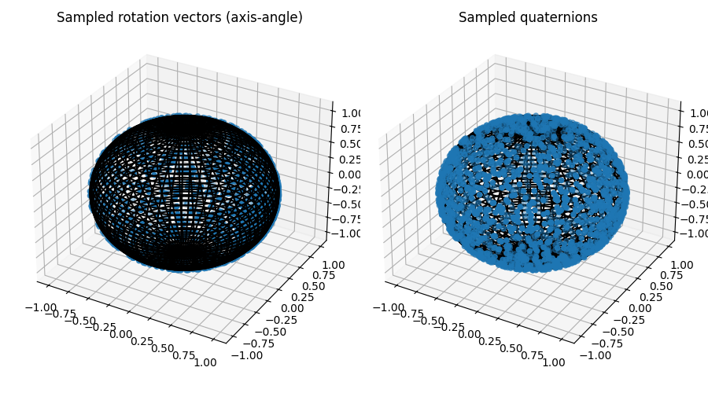

Note
Go to the end to download the full example code.
Compare Rotation Sampling Methods#
There are different ways of sampling rotations. We draw random samples of rotations, convert them to rotation matrices, and apply these to the basis vector (1, 0, 0) to obtain points on the unit sphere.
import numpy as np
import matplotlib.pyplot as plt
import pytransform3d.rotations as pr
import pytransform3d.batch_rotations as pbr
import pytransform3d.plot_utils as ppu
rng = np.random.default_rng(1223532)
n_samples = 2000
v = np.array([1.0, 0.0, 0.0])
plt.figure(figsize=(9, 5))
ax1 = plt.subplot(121, projection="3d")
ax1.set_title("Sampled rotation vectors (axis-angle)")
ppu.plot_sphere(ax1, radius=1, n_steps=100)
rotations = np.vstack([pr.random_compact_axis_angle(rng)
for _ in range(n_samples)])
R = pbr.matrices_from_compact_axis_angles(rotations)
v_R = np.einsum("nij,j->ni", R, v)
ax1.scatter(v_R[:, 0], v_R[:, 1], v_R[:, 2])
ax2 = plt.subplot(122, projection="3d")
ax2.set_title("Sampled quaternions")
ppu.plot_sphere(ax2, radius=1, n_steps=100)
rotations = np.vstack([pr.random_quaternion(rng) for _ in range(n_samples)])
R = pbr.matrices_from_quaternions(rotations)
v_R = np.einsum("nij,j->ni", R, v)
ax2.scatter(v_R[:, 0], v_R[:, 1], v_R[:, 2])
plt.tight_layout()
plt.show()
Total running time of the script: (0 minutes 0.355 seconds)